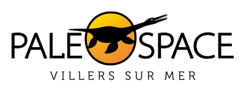

Baptiste Périaut
A propos

Étudiant de 1er année, en BUT Informatique dans l’IUT de Lannion. Et à l'aide de ce parcours, j'ai acquis plusieurs compétences. Toujours dans la poursuite de ce parcours, je recherche une alternance.
- Née : 26/09/2005
- Linkedin : www.linkedin.com/in/baptiste-periaut
- Mail : baptisteperiaut@gmail.com
- Numéro : 06 63 01 92 06
Formations
Experience

Stage d'observation, 1 semaine
2019
Experiences :
- Guide touristique
- Gestion d'un lieu touristique
- Gestion du marketing
Centres d'interêts
Nintendo
Favori : Splatoon
- Histoire/Lore
- Musique
- Multijoueur
Anime
Favori : Moi, quand je me réincarne en slime
- Comédie
- Histoire